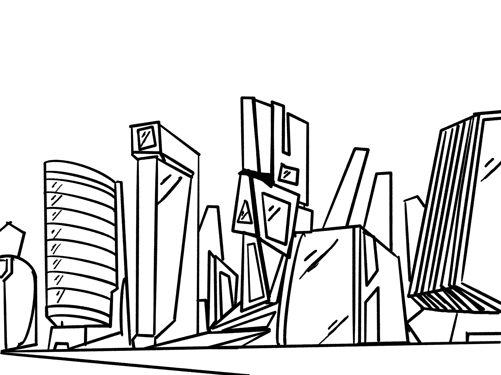
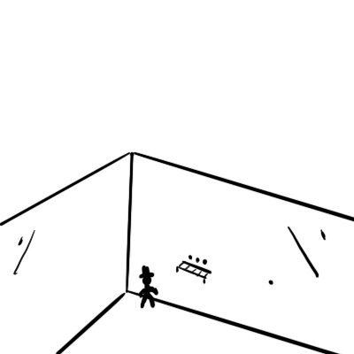
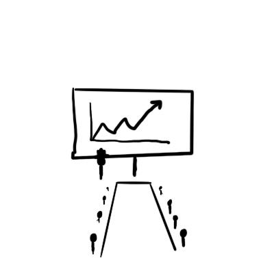

Amongst the soaring skyscrapers piercing through the clouds stood the headquarters for Amazing Co. Mr Cash looked down at the clouds below him. You can see the patch of smoke from Industriaville as a stain on the skyline.

Mr Cash didn’t sleep very much, why would you need to sleep when there are products to release and money to make. After his successful launch of the latest a-Phone Mr Cash became obsessed with maximising his time as profits are king. Any way that could possibly minimise costs he instantly tried to incorporate it into his business.
Somehow Mr Cash and Amazing Co. had a tight grip on the minds of those all around the world. Making everyone obsessed with the next big thing and things that they really didn’t need.
He made it so that everyone was showered with ads for the ‘Next Big Thing’. He didn’t have to change his marketing approach much from product to product anymore. As soon as a new product released it basically sold itself. A minor tweak here, small upgrade there, slap a new name on it and everyone buys it all over again.

Sometimes Mr Cash had a fleeting thought about the amount of waste that this would produce as he could see the hill of rubbish from the tip become larger each week. Very rarely did this thought last as he remembered that he had far too much money to have to worry about environmental problems.

As technology got better and better Mr Cash started showing interest in robots. If he didn’t have to pay all of his staff, the board would be very happy.